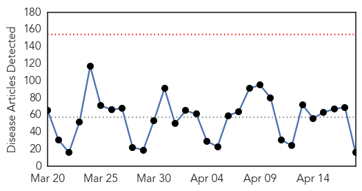
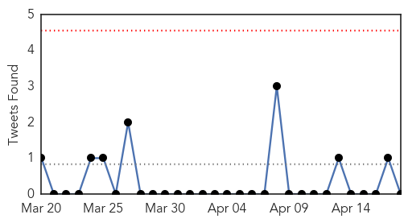
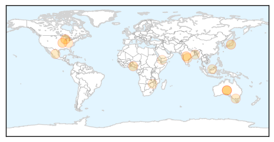
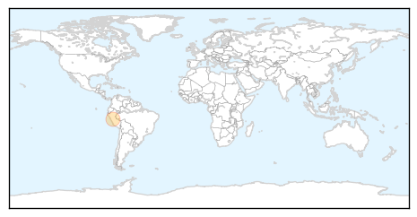

Unknown
30-Day Web Trend
0 alerts, 0 warnings

30-Day Twitter Trend
0 alerts, 0 warnings

Article Locations
Article Confidences

Top Articles:
- 0.954
- Canine Flu outbreak comes to Ohio
- 0.910
- The world windows to Thailand
- 0.890
- Bizarre mom-son ‘mystery’ deaths have docs stumped
- 0.889
- Rabies Kill 60,000 People Annually Worldwide: Study
- 0.778
- 17 people killed as strange disease hits Ondo
- 0.666
- Botulism Alert in New Mexico and Texas
- 0.645
- Queensland Researchers To Urge Government To Ban Preggy Mum From Kissing; CMV Can Cause Blindness Or Mental Disorder
- 0.636
- Fiona Stanley Hospital refers worried patients to GPs for blood tests
- 0.636
- Fiona Stanley Hospital refers worried patients to GPs for blood tests
- 0.632
- 1.6 Lakh Birds from Infected Zone Culled
- 0.609
- 24 new HIV cases reported in Indiana outbreak
- 0.591
- Prevalence of lifestyle diseases among adult Malaysians ‘worrying’, health minister admits
- 0.580
- Fiona Stanley Hospital refers worried patients to GPs for blood tests
- 0.564
- Mugabe condemns anti-migrant attacks in South Africa.
- 0.557
- Manpower crisis cripples Khulna Medical College Hospital
- 0.501
- UN appeals for more donations as humanitarian crisis grows in Yemen - Xinhua
Top Tweets:
- 0.601
- RT: Mañana 19 de abril de 2015 será una fecha muy importante. Mañana a las 6:00PM en la Plaza de Caguas será el... http:/…
Hepatitis
30-Day Web Trend
0 alerts, 0 warnings
30-Day Twitter Trend
0 alerts, 0 warnings

Article Locations
Article Confidences

Top Articles:
Top Tweets:
-
No tweets found for Apr 18, 2015